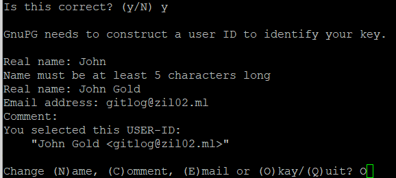

Права доступа должны быть для ~/.gnupg
find ~/.gnupg -type d -exec chmod 700 {} \;
find ~/.gnupg -type f -exec chmod 600 {} \;
Для того чтобы посмотреть публичный и приватный ключи:
gpg -k #публичный ключ
gpg -K #приватный ключ
Warning: При создании gpg --full-gen-key > email
(email - должен быть как на Github:
KAlex-git
пароль github)

Для того, чтобы залить password-store в Github или GitLab, нужно проделать следующие шаги:
pass git init
cd ~/local/share/password-store
git branch -M KAlex-git
git remote add origin git@github.com:KAlex-git/pass.git
git add .
git push -u origin KAlex-git
где, git branch - переход в репозиторий
git remote add - добавление своей иницилизорованной (pass git init) папки в резоторий на хостинге.
или же использвать кроткий путь...:
pass git init
git remote add origin git@github.com:KAlex-git/pass.git
pass git push -u --all
Вот и всё. Вот дополнительные источики: